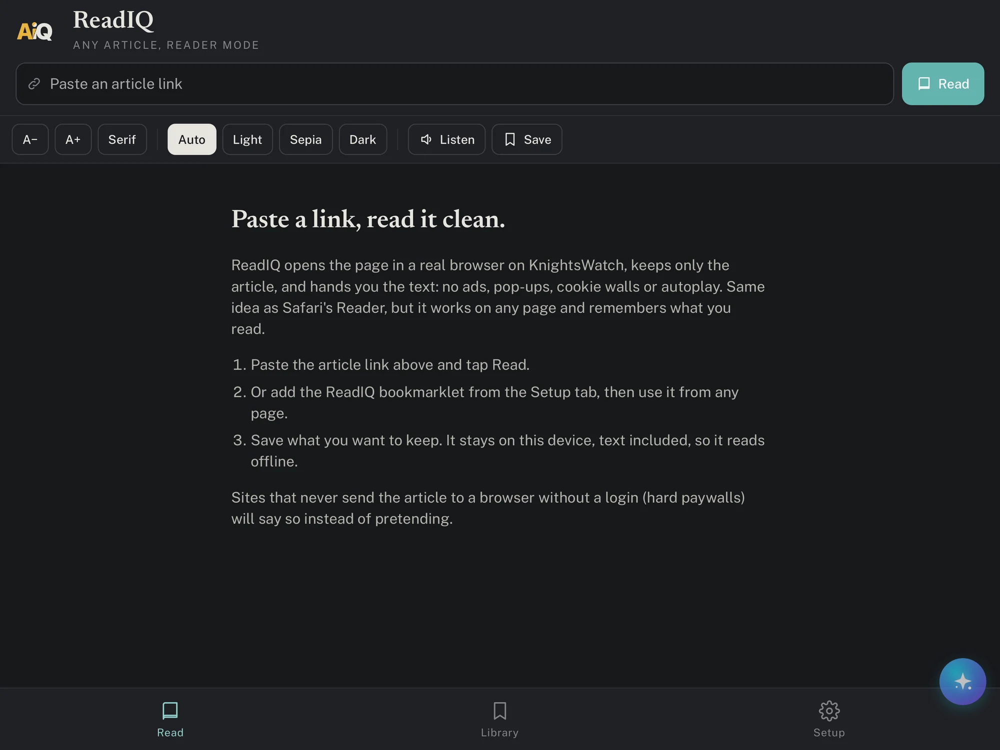
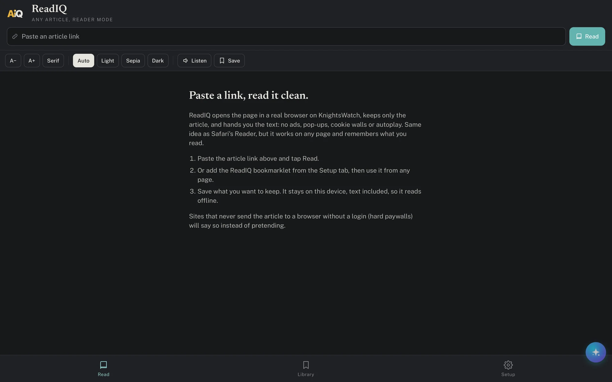

ReadIQ
AiQ ManageReadIQ: Article Reader TestFlight
Paste a link, read it clean. Any article, reader mode, saved for later, read aloud.
What it does
ReadIQ opens the page in a real browser, keeps only the article, and shows the text with your typography. Save articles to read offline, listen with the device voice, and share from Safari straight into the app. When a site refuses a server, the app reads it on your iPhone with your own logins.
- Reader mode for any page, with size, serif or sans, and light, sepia or dark themes
- Offline library with full text
- Listen mode, tap a paragraph to jump
- Share-sheet extension and bookmarklet
Screens



Privacy
Articles you save stay in the app. Nothing is sent anywhere except to the site you asked to read.